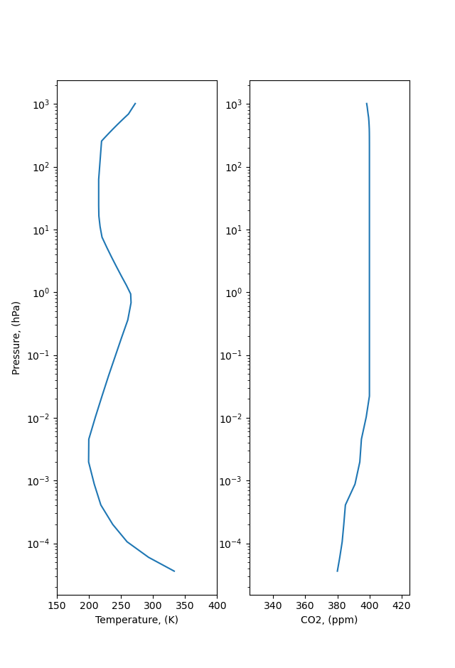

C3S2
Table of Contents
##+SETUPFILE: setup/org/theme-perso.setup
1 PMR
1.1 Description de l'instrument

Figure 1: Schéma de PMR
Pression dans la cellule :
\begin{equation} P = P_{mean} + \Delta P_c ~ sin(\omega t) \end{equation}
Figure 2: Transmittance du filtre
Le filtre est fourni avec un pas de 1e-3, il faut l'interpoler pour avoir un pas de 1e-4 qui correspond à la précision qu'on utilise dans LBLRTM.
Est ce qu'on peut pas extrapoler le filtre large bande, en ajustant une exponentielle pour aller de 575 à 775 ?
1.1.1 Caractéristiques technique
Le PMR comprends 2 cellules :
- Une cellule de 1 cm de long de pression variant entre 0.5 et 3 mb (60 à 90 km).
- Une cellule de 6 cm de long de pression 1 à 4 mb (40 à 60 km).
La pression dans les cellules oscille sinusoïdalement.
1.1.2 Approximation de P. Rayer
- P_mean dans les cellules
- Secante dans les celllules
- Le filtre large bande s'arrete à 600 et 750.
- Normalisation par méthode des trapèzes ?
- Extansion des profils en altitude
1.2 Dans LBLRTM
1.2.1 Profil à 1 couche
- Pression fixée soit minimale soit maximale
- Résolution à 0.0001 cm^-1
- In
Voilà la TAPE5 de P. Rayer :
$ TAPE5 - PMR cell at minP from CreateInputs-Cell-PP.f HI=1 F4=1 CN=6 AE=0 EM=1 SC=0 FI=0 PL=0 TS=0 AM=1 MG=0 LA=0 OD=1 XS=0 00 00 1.000 1.000 1.000 1.000 1.000 1.000 1.000 599.9995 750.0005 0.0 0.0 0.0 0.0000 0.0000 0 0.0001 0.000 0 1 0 1 1 2 1.000 0.00001 2 minP - Pmean=0.62 hPa 0.000 0.419 292.100 AA EE 0.000 0.419 2.000 0.419 292.100 AA EE 0.000 0.419 $ Interpolate LBL results onto user-defined output grid HI=0 F4=0 CN=0 AE=0 EM=0 SC=2 FI=0 PL=0 TS=0 AM=0 MG 0 LA=0 OD=0 XS=0 00 00 0.0010 600.0000 750.0000 0 0 12 11 -1. %%%%%On controle la longueur de la cellule sur la ligne 7, et la pression de la cellule sur les colonnes 15-20 aux lignes 9 à 12. Le 0 ligne 5, fixe le facteur d'échelle à 0 ( montant des colonnes des couches à 0 pour tous les niveaux 0).
ligne Record TAPE RAYER Paramètres controllés 1 1.1 $ TAPE5 - PMR cell at minP from CreateInputs-Cell-PP.f Identification 2 1.2.1 HI=1 F4=1 CN=6 AE=0 EM=1 SC=0 FI=0 PL=0 TS=0 AM=1 MG=0 LA=0 OD=1 XS=0 00 00 3 1.2.3 1.000 1.000 1.000 1.000 1.000 1.000 0.000 4 1.3 599.9995 750.0005 0.0 0.0 0.0 0.0000 0.0000 0 0.0001 v1, v2, … 5 1.5 0.000 Profile de température atmosphérique 6 3.1 0 1 0 1 1 2 profil atm fourni par l'utilisateur, pression et température constante(profil horizontal), …, …, nb molécules 7 3.2H 1.000 0.00001 altitude de l'observateur, , longueur du chemin en km 8 3.4 2 minP - Pmean=0.62 hPa nb de frontières, identification du profil 9 3.5 0.000 0.530 292.100 AA EE altitude frontière, pression, température, choix des unités 10 3.6.1 0.000 0.530 densité des différentes molécules, 0 pour H2O, 0.53 pour le CO2 11 3.5 2.000 0.530 292.100 AA EE 2 étapes précédentes pour la deuxième frontière 12 3.6.1 0.000 0.530 2 étapes précédentes pour la deuxième frontière 13 $ Interpolate LBL results onto user-defined output grid 14 HI=0 F4=0 CN=0 AE=0 EM=0 SC=2 FI=0 PL=0 TS=0 AM=0 MG 0 LA=0 OD=0 XS=0 00 00 15 9.1 0.0010 600.0000 750.0000 0 0 12 11 16 1. 17 %%%%% - Out
- Lecture des TAPE10

Figure 3: Profondeur Optique pour la cellule 2 à Pmax

Figure 4: Profondeur Optique pour la cellule 2 à Pmin
- Lecture des TAPE11
Transmittance de la cellule :
Figure 5: Transmittance pour la cellule 2 à Pmax
Figure 6: Transmittance pour la cellule 2 à Pmin
Approximation 2 cellules : Transmittance de la cellule :
\begin{equation} H_{\nu} = t^{Pmin}_{\nu} - t^{Pmax}_{\nu} \end{equation}Figure 7: SRF de la cellule 2 de PMR
On peut ainsi calculer les SRF pour les 2 cellules et les différents angles :
Cell 1 Cell 2 00 1-00 2-00 05 1-05 2-05 10 1-10 2-10 15 1-15 2-15 20 1-20 2-20 25 1-25 2-25 On notera la SRF de la cellule \(H(\nu)\) et celle du filtre large bande $G(ν) $
- Lecture des TAPE10
1.2.2 Profils atmosphériques
- Résolution à 0.0001cm^-1
- Concentration en CO2 diminuée pour correspondre aux valeurs des années 1970
On notera la SRF du profil \(\tau(\nu)\).
1.2.3 Convolution
La transmittance totale correspond à :
\begin{equation} \tau_{tot} = \tau H G \end{equation}avec \(\tau\) transmittance du profil, H la SRF de la cellule et G celle du filtre large bande.
Figure 8: Transmittance des différents composants
1.2.4 Fonction de Poids
Figure 9: Fonction de poids pour la cellule 2 de PMR et le profil 83.

Figure 10: Fonction de poids pour les cellules 1 et 2 de PMR et le profil 83.
Figure 11: Fonction de poids pour la cellule 2 de PMR et le profil 83 avec les différents angles.
2 Effet Doppler
2.1 Principe
2.1.1 Doppler simple
2.1.2 Doppler avec un angle

2.1.3 Le satellite se rapproche

Figure 14: \(\alpha\): angle de visée, \(\theta\): angle entre \(\vec{v}\) et rayonnement
2.1.4 Le satellite s'éloigne

Figure 15: \(\alpha\): angle de visée, \(\theta\): angle entre \(\vec{v}\) et rayonnement
2.1.5 Dans les deux cas
2.2 Dans LBLRTM
2.2.1 Modification de oprop.90
- Changement ligne 700
! DOPPLER SHIFTS WILL BE CALCULATED FOR SATELLITE HEIGHT OF 1100 KM ! VELOCITY 26282.9 KM/H FOR A CIRCULAR ORBIT DATA velPMR/26282.9/ ! SCAN ANGLE FOR THIS RUN -ITS SINE, DEFINING A PARTICULAR PMR CHANNEL DATA scansine/0.05/ ! PI IMPLICTLY R*8 DATA VPI/3.14159265359/ ! C IMPLICITY R*8 (M/S) DATA vc/299792458.0/ ! VC IN KM/H vvc=vc*3600./1000. ! ! - Changement ligne 750
VNU(I) = vlin(I) ! DOPPLER BLUE SHIFT - VIEW AGNLE BETWEEN NADIR AND FORWARD ORBITAL MOTION VNU(I) = VNU(I) * (1. + velPMR*scansine/vvc) !
2.2.2 Décalage des raies de transmitance

Figure 16: Décalage des raies d'absorption par effet Doppler
3 LBLRTM
3.1 Compilation
Le makeclean étant daubé, la première étape consiste à supprimer les dosier .obj présent dans le dossier.
Pour compiler LBLRTM, il faut lancer la commande dans le dossier build :
make -f make_lblrtm linuxGNUdbl
3.1.1 Modification makefile.common
Il faut ajouter l'option std=legacy pour l'option de compilation choisi, pour nous linuxGNUdbl :
FCFLAG="-std=legacy -g -O3 -fdefault-integer-8 -fdefault-real-8 -frecord-marker=4 -fno-align-commons" \
3.1.2 Modification lblatm.f90
Selon les versions, la ligne 7500 ou après contient une erreur, il faut ajouter un espace :
IF (RANGEI .LT. DR) STOP 'STOPPED IN FNDPTH' <---- Valentin modif IF (RANGEI .LT. DR) STOP'STOPPED IN FNDPTH'
3.2 Présentation des TAPES
3.2.1 TAPE3
La TAPE3_b est un fichier binaire qui est généré par lnfl.
3.2.2 TAPE 5
La TAPE5 controle les paramètres de LBLRTM et le profil de l'atmosphère. Elle est composée de différents Record, on s'intéresse ici seulement à certains.
- Sortie en ascii
Pour génerer des fichiers de sorties en ascii, selon le tableau suivant:
TAPE Grandeur 27 Transmittance 28 Température de Brillance 29 Radiance Il faut ajouter le record 12 suivant au TAPE5
0.01 575.0000 775.00000 1 0 12 1 1 11 2 0.01 575.0000 775.00000 0 0 12 1 1 13 2 -1.0 $ Transfer to ASCII plotting data HI=0 F4=0 CN=0 AE=0 EM=0 SC=0 FI=0 PL=1 TS=0 AM=0 MG=0 LA=0 MS=0 XS=0 0 0 # Plot title not used 575.0000 775.00000 1.02000 1.000000 5 0 11 0 1.000 0 0 0 0.0000 1.2000 7.0200 0.2000 4 0 1 1 0 0 0 3 29 575.0000 775.00000 10.2000 1.000000 5 0 11 0 1.000 0 0 0 0.0000 1.2000 7.0200 0.2000 4 0 1 1 1 0 0 3 28 575.0000 775.00000 1.02000 1.000000 5 0 13 0 1.000 0 0 0 0.0000 1.2000 7.0200 0.2000 4 0 1 0 0 0 0 3 27 -1. %%%%%
3.2.3 TAPE6
Fichier de sortie de LBLRTM contenant plein d'informations
3.2.4 TAPE7
- TAPE7_b = TAPE3_b en ASCII
Fichier de composition moléculaire le long de la colonne atmosphérique.
3.2.5 TAPE10
La TAPE10 est un fichier binaire qui contient les informations de profondeur optique. Il peut être lu par un code idl
read_lbl_data.pro
3.2.6 TAPE11, TAPE12, et TAPE13
Les TAPE 11, 12, et 13 sont les fichiers de sorties binaires de LBLRTM. On peut les convertir en ASCII en ajoutant quelques lignes au TAPE5 ( Section 3.2.2.1)
3.3 LNFL
Avant d'éxécuter lnfl il faut linker la TAPE1 sur le fichier aer.
Une fois qu'on a fait tourner lnfl, on obtient la TAPE3 dont a besoin lblrtm
3.4 V12.13

Figure 17: Transmittance of the profil 83 for all gaz

Figure 18: Transmittance of the profil 83 for Co_2 only

Figure 19: Transmittance of the profil 83 for all gaz, zoom on the PMR window
Figure 20: Transmittance of the profil 83 for Co_2 only, zoom on the PMR window
3.5 V12.2

Figure 21: Transmittance of the profil 83 for all gaz, zoom on the PMR window
3.6 Profondeur optique
3.6.1 code idl
- compiler le code:
IDL> .r read_lbl_data.pro
- executer le code sur le TAPE10
IDL> read_lbl_file,'/CEMS_data/sondage/julesv/runs_lblrtm/run10/ODdeflt_100',data1,data2,data3,/double
Attention, voir dans le code pour ce que représente data1,data2,data3
- Écrire les valeurs des nombres d'ondes dans un fichier texte test.dat:
IDL> write_matrix,'test.dat',data2
3.6.2 TAPE10
Le code idl , permet de lire la TAPE10 :

Figure 22: Optical depth of profil 83 for all gaz, zoom on PMR window
3.7 Couche par couche
- ODdeflt
- ODint
- ODexact
On peut lire un fichier avec read_lbl.pro
Ce qui permet de tracer les fonctions de poids.

Figure 23: Fonction de poids pour le profil 83 à 650 cm\(^{-1}\)
4 Coefficient RTTOV
4.1 Pré-traitement
Sur LISA, dans /home/rttov/filtres/pmr Construction d'un fichier texte au bon format pour RTTOV
- csv_to_flt.py qui créer un fichier pour chaque canal
- to_instrument.sh pour concaténer les différents canaux sur un seul fichier
4.2 Génération des coefs
[[redmine.meteo.fr/issues/34399][Redmine C3S2]]
Sur LISA, dans home/rttov/filtres/pmr_test Dossier dans lequel il y a une doc (avec un org), et une arbo propre.
4.3 RTTOV-GUI
4.3.1 Profils
Figure 24: profil US76_1
Figure 25: profil US76_2

Figure 26: profil US76_3
Figure 27: profil US76_4
Figure 28: profil US76_5
Figure 29: profil US76_6
4.3.2 Brightness Temperature
Figure 30: Brightness temperature from coefficients on the profil US76_1
Figure 31: Brightness temperature from coefficients on profils US76
5 Arbo
Mettre ici l'arbo des dossier